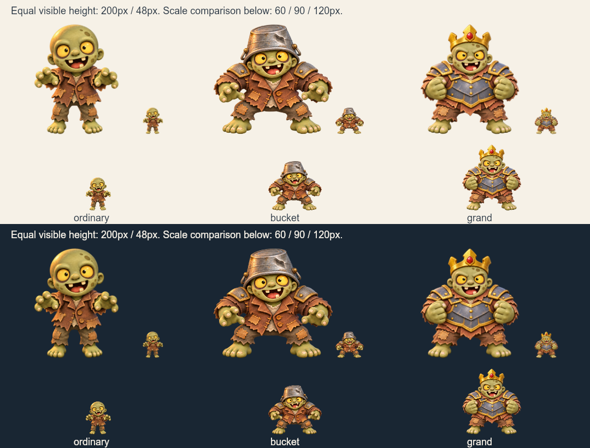

待视觉确认，未接入运行时。上/下半分别为浅/深底。各角色均提供等高200px与48px对照，以及60/90/120px比例对照。按alpha≥128的可见主体计算高度，只用于审样；原图完整绘制，未去除半透明边缘。

| 角色 | 母版 | KiB | 非零alpha不触边 |
|---|---|---|---|
| ordinary | 1536×1024 | 1552.5 | 通过 |
| bucket | 1536×1024 | 1534.4 | 通过 |
| grand | 1312×1199 | 940.6 | 通过 |
静态独立造型对照不等于游戏实际布局、帽标/血条遮挡、攻击时点、碰撞或设备验收。锚点、部件拆分及动态接入仍待完成。